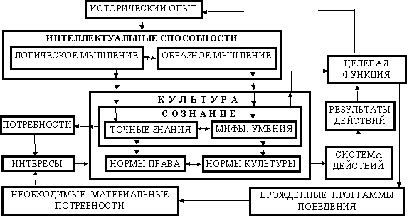

Л. Куликов
“Мы сами должны быть теми изменениями,
которые мы желаем видеть в мире”.
Махатма Ганди
1.Продуктивное исследование любой системы предполагает возможность ее идентификации, полноту и определенность понятийного и категориального пространства. Затянувшаяся нестабильность и неопределенность социально-экономической ситуации в России дают основания для серьезных сомнений в наличии таковых в арсенале правящей элиты. Иными словами, в принятой системе координат российские проблемы решения скорее всего не имеют.
2.Новым моментом в российском обществоведении в последнее время является признание того факта, что не экономика определяет культуру, как принято считать в марксизме-ленинизме, а культура выстраивает адекватные себе экономику и политику. По своей значимости это тождественно смене парадигм. В символической форме этот мировоззренческий поворот можно представить так:
К = ¦ (Э,П) ® Э,П = j (К).
Тогда возникает необходимость ревизии существующего понятийного пространства, причинно-следственных связей и, соответственно, принятых социально-экономических моделей. Ключевым в этом процессе становится понятие культуры.

Рис.1
3.Философы определяют культуру как осмысленный и закрепленный в поведенческих стереотипах - нормах культуры - исторический опыт. При прочих равных условиях результат осмысления зависит от умственного строя - соотношения образного и формально-логического мышления в интеллектуальных способностях. Эти типы мышления по-разному осмысливают реальность вообще и исторический опыт в частности: образному мышлению мы обязаны существованием художественной литературы всех жанров, изобразительного искусства, мифов, религиозных систем, нравственных ценностей, обычаев, верований, умений, ритуалов и т.д.Нормы культуры - единственный способ существования и реализации исторической памяти, они неразделимы с историей народа.
Продуктом формально-логического мышления являются достоверные или принимаемые за достоверные знания о себе, окружающей среде, причинно-следственных связях между явлениями и т.д. Знания - истинные и ложные - образуют сознание, формирующее потребности, выступающие в форме интересов, и целевую функцию для действий по их удовлетворению. Наличие ее является императивом собственно человеческой деятельности. Все это находит отражение в социальном поведении - системе действий, регулируемой нормами права и культуры. Вне действий нет культуры, потому нормами культуры (или системой культуры по Т. Парсонсу) называют долговременные и высоко устойчивые поведенческие характеристики относительно больших социальных групп. Нормы права и культуры образуют механизм сохранения идентичности и выживания сообщества в качестве социума. Если этот механизм по каким-либо причинам отказывает, то включаются инстинкты. Но это уже другая проблема.
Сказанное можно представить в форме структурно-логической схемы, показанной на Рис.1.
4.Выводы из сравнение результатов действий с прогнозируемыми, заложенными в целевую функцию, служит основанием для корректировки системы действий путем изменения норм права и культуры с целью уменьшения отклонений полученных результатов от ожидаемых. Положительный результат прогнозирования и корректировки будет при следующих непременных условиях:
наличии необходимых знаний о причинно-следственных связях;
наличии интеллектуальных способностей добыть нужные знания при их
отсутствии.
Оба условия реализуются при достаточно развитом формально-логическом мышлении, уровень которого полностью детерминирует динамику сообщества и, соответственно, его перспективы. Потому типология культур (цивилизаций) должна строиться на основе особенностей умственного строя. Тогда можно выделить всего три типа цивилизаций, образующих полую группу:
R - цивилизация “реалистов” с гармонично развитым мышлением;
F - цивилизация “физиков” с преимущественно формально-логическим
мышлением;
L - цивилизация “лириков” с преимущественно образным мышлением.
Это разные и несравнимые друг с другом цивилизации, как нельзя сравнивать А. Эйнштейна с П. Чайковским, И. Репина с И. Павловым, негра с мотоциклом, корову с майским жуком и т.д. Они живут в основном по присущим только им законам и достигнутое в одной цивилизации может оказаться неприемлемым и даже смертельно опасным для другой. Сотрудничество между ними возможно только там, где их нормы культуры совпадают, в остальном они безразличны или даже враждебны друг другу, ибо иные нормы культуры воспринимаются как угроза идентичности и, следовательно, существованию данной цивилизации. Совпадающие нормы лежат в основе метакультуры, процесс формирования которой давно идет и его краеугольными камнями являются терпимость и способность к компромиссу. Создается гомогенная сетевая структура из гетерогенных элементов, признать равноправие которых человеческое мышление не может по той причине, что людям имманентна иерархичность как в мышлении, так и в самоорганизации. Это врожденное свойство, отражающее реально существующее неравенство людей и они всегда и на всех уровнях будут строить иерархические пирамиды.
Для идентификации цивилизации надо иметь в виду, что “...небольшой отбор выдающихся людей, которым обладает цивилизованный народ, и которых достаточно было бы уничтожить в каждом поколении, чтобы немедленно вычеркнуть этот народ из списка цивилизованных наций, составляет истинное воплощение ее сил. Им и им только одним мы обязаны прогрессом, сделанным в науках, искусствах, промышленности, одним словом, во всех отраслях цивилизации” (Г. Лебон).
Преступления против человечности, вместе с тем, начинаются там и тогда, где и когда начинается принудительное ранжирование культур и безразлично по каким признакам.
5. Для цивилизации типа R с гармонично развитым мышлением характерны следующие нормы, которые назовем ядром культуры или цивилизованности:
признание ценности интеллекта и природной одаренности;
признание ценности профессионализма и образованности;
признание ценности личности и ее прав;
признание неприкосновенности частной собственности;
законопослушность;
способность к компромиссу и социальному партнерству;
честность и обязательность, высокий уровень взаимного доверия.
Тогда вторичные признаки (какие-то из них могут и отсутствовать), характерные для цивилизации этого типа, можно сформулировать следующим образом:
высокий уровень развития точных наук и наукоемких производств и технологий;
высокий уровень развития точных наук и наукоемких производств и
технологий;
высокий уровень организации производства, производительности труда и
потребления;
высокий уровень правового регулирования всех сфер жизнедеятельности
общества;
рациональная организация государства с демократическим типом
власти;
развитое гражданское общество;
развитое правосознание населения и законопослушность;
развитая система социальной защиты.
Представляется очевидным, что вне ядра культуры они сформироваться не могут. Эти же признаки присущи и цивилизации F, полагая ее продолжением естественного развития цивилизации R.
6 Цивилизация типа Lотличается угнетенностью логического мышления, что обусловливает дефицит точных знаний, несовершенство норм права, мифологизирует сознание, делая его тем самым мало способным к реалистичной самооценке и самокоррекции, к адекватному восприятию действительности, к рациональному формированию целевой функции (образное мышление всегда конкретно и на широкие обобщения не способно) и организации соответствующей системы действий. Ненаказуемость объективно криминальных действий способствует их как бы легитимизации и закреплению в качестве норм культуры и стереотипов социального поведения. Сообщество превращается в толпу, управляемую в основном инстинктами, которую древние греки назвали охлосом.
Вторичные признаки, характерные для цивилизации такого типа, можно сформулировать так:
недостаточный, нестабильный и различный по отраслям уровень знаний и развития производств;
недостаточный, нестабильный и различный по отраслям уровень знаний и
развития производств;
низкий уровень потребления, качества и производительности труда,
организации производства;
слабые правосознание населения и законопослушность;
неразвитое гражданское общество;
нерационально организованное и коррумпированное государство,
охлократический или авторитарный тип власти;
низкий уровень правового регулирования всех сфер жизнедеятельности
сообщества;
неэффективные системы социальной и правовой защиты;
гипертрофированная склонность к декларативности и театральной
помпезности;
высокий уровень преступности.
Очевидно, что эти признаки находятся вне пределов ядра культуры. Потому в этой цивилизации культура не долговременные и высоко устойчивые поведенческие характеристики относительно больших социальных групп, как это принято считать в цивилизации R, а продукты образного мышления (литература, музыка, все виды изобразительного и исполнительного искусства и пр.), что в цивилизованном мире в основном относят к сфере шоу-бинеса. При господствующем в цивилизации типа L представлении о содержании понятия культуры идет нарастающая десоциализация сообщества. Если цивилизация достаточно изолирована, то в естественном для нее режиме латентного саморазрушения и самоликвидации, как бы замороженной, она может существовать долго и относительно бесконфликтно. В силу закона самосохранения разрушительные для нее идеи, и тем более действия, в рамках ее культуры появиться не могут. Социально значимые конфликты могут возникнуть тогда, когда либо появляется угроза выживанию (биологическому или социальному) количественно значимых социальных групп и спонтанно включаются врожденные программы самосохранения, что приводит к всесокрушающим бунтам, находящимся вне всякой культуры. Либо реализуется некая заимствованная в другой цивилизации идея (например, социалистическая) о скачкообразном переходе на более высокий уровень потребления или социального статуса (что практически одно и то же). Возникающая при этом революционная ситуация как кажущееся переходное состояние (кризис) связана с разрушением сложившихся норм права, адекватных прежней системе действий, разблокированием тем самым врожденных программ и перераспределением под их давлением имущественных прав. Возникает то, что правильнее назвать псевдообществом, Это не меняет типа цивилизации, по своей сути являющейся псевдоцивилиацией, ибо не разрушает системообразующий признак - преобладание образного мышления. Она продолжает существовать и развиваться в органичном для нее режиме саморазрушения, который реализуется уже в иных формах, при иных государственных учреждениях, под водительством иных вождей.
7.Россия всегда принадлежала к цивилизациям типа L с преимущественно образным мышлением. О том свидетельствует импульсный догоняющий режим развития, заимствование зарубежных моделей модернизации, неразвитость правовой системы, авторитарные режимы власти, аллергия на достижения зарубежной науки и собственных интеллектуалов, известное “поэт в России больше, чем поэт”, наконец, сакраментальное “умом Россию не понять...”, и, ставшее знаменитым, “мы хотели, как лучше...”. Это далеко не полный перечень лежащих на поверхности и неопровержимых аргументов. Например, в широко известной и популярной русской песне поется:
Англичанин мудрец, чтоб работе помочь,
Изобрел за машиной машину.
А наш русский мужик, коль работать не в мочь,
Он затянет родную дубину...
Особенности ее умственного строя не допускали широты шага новаций, необходимой для удержания престижной дистанции от креативной группы цивилизаций. В ХХ веке темп развития цивилизованных стран настолько вырос, что архаичная российская культура должна была либо обрести новое дыхание хотя бы путем прекращения гонений интеллектуальной элиты и развязывания инициативы дееспособной части населения, либо вступить в фазу эскалации саморазрушения. Признанием большевиков и поддержкой их в уничтожении тонкого слой носителей зарождающейся культуры западного типа и производительной части населения, утверждением и поддержкой диктатуры шариковых и швондеров, Россия избрала второй путь, сделав и продолжая делать все для продвижения по нему как можно дальше.
Разрушительный большевизм или русский фашизм, как, впрочем, и русский неолиберализм постсоветского периода, при всех их различиях являются эманацией архаичной российской культуры, вызванной ее “облучением” марксизмом, который в России никогда не был усвоен даже на примитивном уровне знания логики построения его несущей конструкции. То же “облучение” западных цивилизаций породило фейерверк конструктивных социал-демократий. Но именно в западных цивилизациях родились науки, лежащие в фундаменте современных производств и технологий. Если из российских школьных учебников изъять формулы, законы, теоремы и пр., найденные, открытые и доказанные вне пределов российской культуры, то учить школьникам станет практически нечего.
8.Хроническое отставание России в цивилизованном развитии и перманентная беременность ее революциями и реформами является ее нормальным способом существования: верхи всегда не могут, а низы всегда не хотят. Для России это неразрешимая и острая коллизия, смягчающаяся тогда, когда низы и верхи находят общего, обычно богатого врага, против которого можно “дружить” до момента раздела принадлежащего ему имущества. В России никогда не “дружили” против нищеты, всегда знали как разделить и никогда не умели хорошо работать, прикрывая это неумение фиговыми листками души и духовности по рецепту из басни “Лиса и виноград”. “Русский человек плохой работник”, - откровенно писал В. Ульянов-Ленин и на том сделал себе и сотоварищам сокрушительную политическую карьеру.
9.Из вышесказанного следует, что существующую в России социально-экономическую ситуацию нельзя определять как кризис - тяжелое переходное состояние. Ее причина в умственном строе российского сообщества - преимущественно образном мышлении. Объективно это не хорошо и не плохо - так есть. Как есть в джунглях Амазонки племена из каменного века со своим умственным строем и никто не пытается приобщать их к европейской или североамериканской цивилизации. Это не нужно ни им, ни европейцам. Это другие цивилизации и тем интересны.
10.Перспектива России на обозримое будущее связана с изменениями в системообразующем признаке - ее умственном строе. Будет ли и впредь господствовать образное мышление и создаваемые им мифы, или рациональное мышление, не обремененное отжившими стереотипами, выстроит адекватное представление о сущности и движущих силах идущих процессов? Окончательный ответ на этот вопрос даст История, но есть определенные основания и для достаточно надежного прогнозирования.
Умственный строй и отвечающая ему культура чрезвычайно стабильны и адекватные им социально-экономические процессы будут развиваться и далее. Этот же признак был присущ СССР, который безусловно принадлежал цивилизации типа L, как и самодержавная Россия. Потому здесь и прижился привлекательный миф о всеобщем нормированном счастье. Историческая судьба СССР уже известна: то, что принималось вначале за кризис и перестройку, в действительности оказалось последней завершающей фазой коллапса - “схлопывания” системы, исчезновения СССР как геополитического субъекта.
Те же процессы с национальной окраской продолжаются в теперь уже суверенных странах СНГ, включая Россию, которая традиционно теряет интеллектуальную элиту. “Страна, которая не ценит тренированный ум, обречена”, - считает М. Тетчер и с ней трудно не согласиться. Здесь ключ к пониманию пророчества Н. Бердяева, высказанного еще в начале века: “В русском народе и его интеллигенции скрыты начала самоистребления”.
Бессмысленно пытаться прогнозировать процесс коллапса России в деталях и сценариях. Буйная фантазия правящей элиты всех уровней способна практически на все. От зарплаты учителям могильными плитами до установления конституционного порядка ковровым бомбометанием. Как это не парадоксально, но ключ к сохранению России как геополитического субъекта в признании, что сегодня имеет быть коллапс, а не кризис. Но при активной спекуляции деятелей от культуры и политики на мифе о величии и неисчерпаемом интеллектуальном потенциале России это практически исключено. Потому в третьем мире, где мы уже находимся, Россия вряд ли задержится на долго.
Сегодня с высокой вероятностью можно прогнозировать только продолжение процесса суверенизации территорий, что отвечает интересам самосохранения региональной правящей элиты, нравственную деградацию и криминализацию недееспособных власти и общества, и возрастающую угрозу внутренних и внешних вооруженных конфликтов. Первостепенная проблема уже не в том, чтобы остановить этот процесс - схлопывание системы остановить невозможно и судьба СССР тому доказательство, а в том, чтобы этот хлопок не стал последним эпизодом в существовании земной цивилизации. Оснований для таких опасений действующие архаичные нормы культуры и, что самое важное, непонимание их определяющей значимости, дают более чем достаточно. Все это на фоне падающего жизненного уровня и грядущей демографической катастрофы, роста внутренней социальной напряженности и кабальной зависимости о внешних финансовых вливаний.
11.В заключение для сравнения и размышлений есть смысл привести характеристики типичных стран Востока и Запада, относящихся к цивилизациям типа R, с Россией как цивилизацией типа L, взятые из книги В. Сухарев, М. Сухарев. Психология народов и наций. “Сталкер”, Украина. 1997г.
Германия . По своему темпераменту немцев нужно отнести к флегматикам. Им присущи холодная рассудительность и выдержка в преследовании целей, а также способность переносить связанные с этим трудности. Характерная черта немцев в обиходе - скромность. Они больше, чем другие народы, изучают чужие языки. В науках часто являются первооткрывателями. У немцев нет выраженной национальной гордости. Немцы отличаются синтетическим складом ума, прилежанием, чистоплотностью и бережливостью, проявляют изумительное терпение и добросовестность в работе, мужественно стойки в борьбе. Ни один народ не действует так сообща, не любит так двигаться массами, как немцы. Это стадное свойство нации можно наблюдать везде и во всем. Немцы с большим успехом работают сообща в поле, на предприятиях и выполняют всякую работу быстрее, чем французы или итальянцы. При этом немецкий работник одинаково аккуратно трудится как в начале, так и в конце работы. Из всех цивилизованных народов немцы легче всего и дольше всего способны подчиняться правительствам, под властью которых они живут, больше всего далеки от жажды перемен и сопротивления существующим порядкам. Особая любовь у немцев к трем вещам - к животным, музыке, цветам.
Япония . В японском национальном характере четко проявляют себя трудолюбие, аккуратность, бережливость, вежливость, дисциплинированность, чувство долга, приверженность традициям, преданность авторитету, склонность к заимствованию, самообладание, стремление к согласованным действиям в группе, любознательность, сильно развитое эстетическое чувство, способность любое умение доводить до совершенства и превращать в традицию. Большое значение в японской культуре придается пунктуальности, точности. Японец с детства учится сдерживать свои индивидуалистические порывы, амбиции, не выпячивать свои сильные качества. Японская мораль считает узы взаимной зависимости основой отношений между людьми, индивидуализм же изображается ею холодным, сухим и бесчеловечным. Японцев как нацию, помимо высокой организованности, скрупулезной аккуратности во всем и отсутствии чувства юмора, выделяет еще одна характерная черта - искренняя самокритичность. Важным механизмом социального контроля является чувство стыда. Японец отдает много сил тому, чтобы избежать этого чувства. Наряду с современной системой законов японцы подчиняются неписаному кодексу общественного поведения. Японская мораль предписывает избегать прямой конфронтации. Долг чести по отношению к самому себе с малолетства приучает этих людей щадить самолюбие окружающих
Россия . Российской культуре свойственны следующие определенно выраженные черты: чрезмерная мифологизированность сознания, неспособность к согласию и склонность к поискам врага, агрессивность по отношению к интеллектуальности и образованности, вольнолюбие при слабом правосознании и дисциплинированности, неуважение к власти и законам при завышенном чинопочитании, склонность к заимствованиям, вороватость, необязательность, неспособность к предвидению и страх перед личной ответственностью, неаккуратность и расточительность, склонность к самоотверженным разрушительным стадным действиям и вандализму, завистливость и лживость, неспособность к самокритике и адекватной самооценке, болезненное самолюбие, приоритет “умения жить” перед трудолюбием и профессионализмом, слабо развитые потребности, склонность к театральности, созерцательности и хвастливости, алкогольная зависимость.
Уместно будет вспомнить, что “Нельзя иначе устремить общество или даже все поколение к прекрасному, пока не покажешь всю глубину его настоящей мерзости" (Н.В. Гоголь).
Публикации автора по концепции, изложенной в предлагаемой работе:
Куликов Леонид Викторович - кандидат технических наук, доцент,
действительный член философско-экономического ученого собрания Центра
общественных наук МГУ.
Москва, май 1999г.
Эта статья передана мне лично Леонидом Викторовичем в пору краткого знакомства в конце 90-х.
Об авторе: КУЛИКОВ ЛЕОНИД ВИКТОРОВИЧ 22.11.1928, Саратов – 24.04.2004, Москва.
Окончил Ленинградский кораблестроительный институт, кандидат
технических наук, доцент, философ.
Работал в НИИ и вузах Саратова, Коврова, Москвы.
В 1980-91 гг. жил в Коврове (Владимирская обл.).
Преподавал в Ковровском филиале Владимирского политехнического
института.
В 1990-1991 председатель Ковровского городского Совета.
Один из организаторов Социал-демократической партии Российской
Федерации (СДПР),
являлся заместителем ее председателя, действительным членом
философско-экономического ученого собрания Центра общественных наук
МГУ.
1991-2004 гг. жил в Москве.
Автор многочисленных публикаций и книг, в том числе «Россия: прошлое,
настоящее, перспективы».